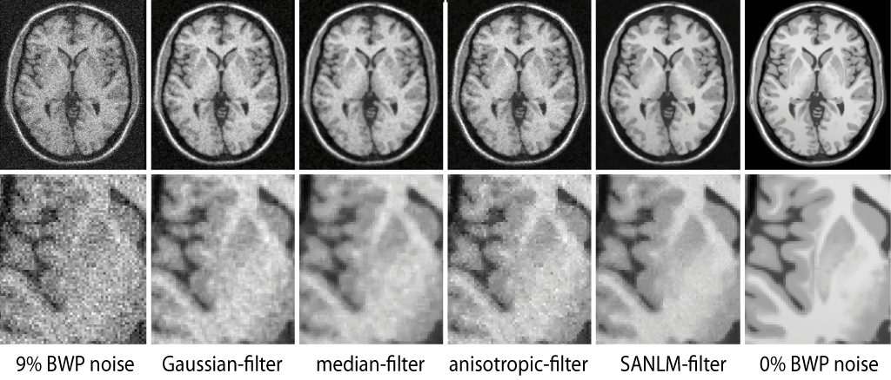
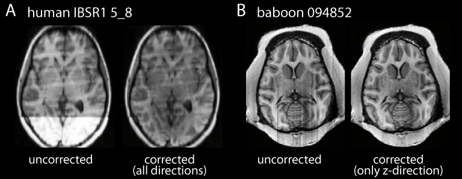
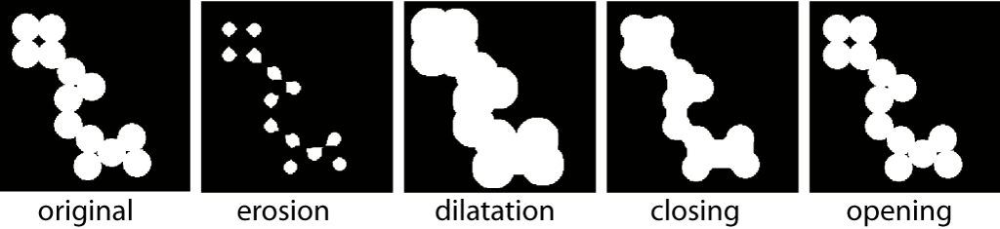

Additional volume-based Functions
- NLM noise filter
- Correction of slice-artifacts
- Morphological operations
- Kappa and RMS error estimation for test and ground truth images
- Image trimming
- Image data type converter
NLM noise filter
The Spatial Adaptive Non Local Means (SANLM) (Manjón:2008) is part of the CAT preprocessing but can also be applied to other image modalities. Moreover, most processing pipelines benefit from the denoising.
You can use the SANLM filter by calling the cat_vol_sanlm function. See help cat_vol_sanlm for further options.

Correction of slice-artifacts
For images with slice-artifacts you can use the CAT slice corrections (see image). You can specify the filter direction and the strength of the filtering. Try to correct only the affected direction. Do not use this correction, if you don't have such kind of artifacts, because it may introduce errors in this case!

Morphological operations
Morphological operations like erosion, dilation, closing and opening of a binary image are available with the cat_vol_morph function. See help cat_vol_morph for further information.

Kappa and RMS error estimation for test and ground truth data
The function cat_tst_calc_kappa allows the estimation of Cohen's Kappa measure (Cohen:1960) and of the RMS error for a set of images with one (e.g. brain mask) or three classes (segment image Yp0).
The first input is given by a set of test images, whereas the second input has to be one ground truth image for all or for each test image.
The output is also saved as *.csv file.
See help cat_tst_calc_kappa for further information.
Image trimming
Some images contain large area of air around the head that increases memory and processing time by factor 2 to 6. Although this is not critical in most datasets, the co-registration of high resolution images can result in unfavorable large field of view. The head trimming tool allows to remove useless air around the image and co-registered volumes.
Image data type converter
MR volumes often require large amounts of disk-space and the use of lower data precision can help to save disk space. For instance atlas maps with integer values need no double precision and you can use the data type converter to optimize your data. Furthermore, even integer data types allow floating point values. For instance the tissue classification of CAT creates maps with uint8 precision and a data range between 0 and 1 with a step size of ~0.01.
References:
-
Manjón:2008
Manjón JV, Carbonell-Caballero J, Lull JJ, García-Martí G, Martí-Bonmatí L, Robles M. MRI denoising using non-local means. Medical Image Analysis, 2008, 12(4), 514-523.
-
Cohen:1960
Cohen J. A Coefficient of Agreement for Nominal Scales. Educational and Psychological Measurement, April 1960, Vol. 20 No. 1 37-46.